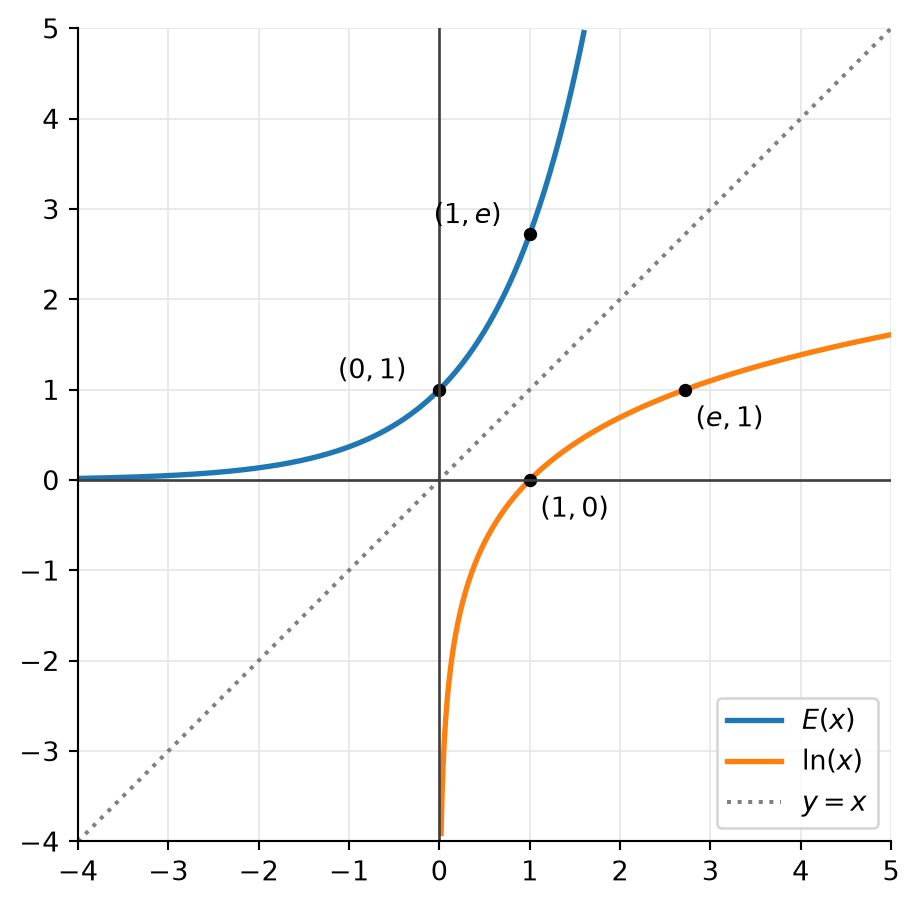

25 The Exponential Function and the Logarithm
In Definition 5.4 and Definition 5.5 we took \(a^x\) and \(\log_a\) for granted. In this chapter we construct them: we first define the natural logarithm as an integral, and then obtain the exponential function as its inverse.
25.1 The Number \(e\)
Recall (Theorem 8.3) that \[ e = \lim_{n\to\infty}\left(1+\frac1n\right)^n . \] This number arises from the continuous compounding of interest. Invest \(\$1\) at \(100\%\) interest per year.
- Interest paid once a year: after one year we have \(\$2\).
- Interest \(\tfrac12 = 50\%\) paid every six months: \(\left(1+\tfrac12\right)\left(1+\tfrac12\right) = \$2.25\).
- Interest \(\tfrac1{12}\) paid every month: \[ \underbrace{\left(1+\tfrac1{12}\right)\left(1+\tfrac1{12}\right)\cdots\left(1+\tfrac1{12}\right)}_{12\text{ times}} = \left(1+\tfrac1{12}\right)^{12} \approx \$2.613 . \]
- Interest \(\tfrac1{52}\) paid every week: \(\left(1+\tfrac1{52}\right)^{52} \approx \$2.693\).
Compounding more and more often, we approach \[ e = \lim_{n\to\infty}\left(1+\frac1n\right)^n = 2.718281828459\ldots \]
Why is this number so important? The answer will emerge in the course of this chapter: \(e\) is the base of the logarithm defined by the simplest possible integral (Proposition 25.2), and \(e^x\) is the function that is its own derivative (Proposition 25.6).
25.2 The Natural Logarithm
Here the integral is understood in the oriented sense of Definition 13.1, so that it also makes sense for \(0<x\le 1\).
NoteProof
Proof.
- The integrand \(\frac1u\) is continuous for \(u>0\), so the integral exists for every \(x>0\).
- This is the Fundamental Theorem of Calculus. (Continuity can also be seen directly: for \(0<x<w\), Corollary 13.2 gives \(0 \le \ln(w)-\ln(x) = \int_x^w \frac{du}{u} \le \frac{w-x}{x}\).)
- Let \(0<x<w\). By additivity in any order (Exercise 13.1), \(\ln(w)-\ln(x) = \int_x^w \frac1u\,du\). The integrand is positive, and its minimum on \([x,w]\) is \(\frac1w\), so by Corollary 13.2 \[ \ln(w)-\ln(x) \ge \frac{w-x}{w} > 0 . \]
- \(\ln(1) = \int_1^1 \frac1u\,du = 0\). The rest follows from 3. (Equivalently: for \(x>1\) we integrate a positive function from left to right, for \(0<x<1\) from right to left.)
NoteProof
Proof. Fix \(y>0\) and regard both sides as functions of \(x\in(0,\infty)\). Since \(\ln\) is differentiable, we can take derivatives. By the Fundamental Theorem of Calculus and the chain rule, \[ \frac{d}{dx}\ln(xy) = \frac1{xy}\cdot y = \frac1x, \qquad \frac{d}{dx}\big[\ln(x)+\ln(y)\big] = \frac1x + 0 = \frac1x . \] Both sides have the same derivative on the interval \((0,\infty)\), so they differ by a constant \(C\): \[ \ln(xy) = \ln(x)+\ln(y)+C \qquad\text{for all } x>0. \] Plugging in \(x=1\) gives \(\ln(y) = 0 + \ln(y) + C\), so \(C=0\).
NoteProof
Proof. The first identity follows from Theorem 25.1 by induction on \(n\). Replacing \(x\) by \(x^{1/n}\) in it gives \[ \ln(x) = \ln\Big(\big(x^{1/n}\big)^n\Big) = n\ln\big(x^{1/n}\big), \qquad\text{so}\qquad \ln\big(x^{1/n}\big) = \frac1n\ln(x). \] Together, for rational \(r = \frac pq>0\) with \(p,q\in\mathbb{N}\): \[ \ln(x^r) = \ln\Big(\big(x^{1/q}\big)^p\Big) = p\ln\big(x^{1/q}\big) = \frac pq\ln(x). \]
25.3 Where Is \(\ln(x) = 1\)?
NoteProof
Proof. Since \(\ln\) is continuous, we may pull the limit out (Definition 6.2), and then use Corollary 25.1: \[ \ln(e) = \ln\left(\lim_{n\to\infty}\left(1+\frac1n\right)^n\right) = \lim_{n\to\infty}\ln\left(\left(1+\frac1n\right)^n\right) = \lim_{n\to\infty}\, n\,\ln\left(1+\frac1n\right). \] Now \[ \ln\left(1+\frac1n\right) = \int_1^{1+\frac1n}\frac1u\,du , \] and by the Mean Value Theorem for Integrals (Theorem 13.1) this equals \(\frac1n\cdot\frac1{\xi_n}\) for some \(\xi_n\in\left[1,1+\frac1n\right]\). As \(n\to\infty\), we have \(\xi_n\to1\) (squeeze theorem). Hence \[ \lim_{n\to\infty} n\,\ln\left(1+\frac1n\right) = \lim_{n\to\infty} n\cdot\frac1n\cdot\frac1{\xi_n} = \lim_{n\to\infty}\frac1{\xi_n} = 1 . \]
25.4 The Inverse Function of \(\ln\)
What is the range of \(\ln\)? For rational \(r\), the power \(e^r\) is defined by roots: if \(r=\frac pq\), then \(e^r = \sqrt[q]{e^p}\). By Exercise 25.1 and Proposition 25.2, \[ \ln(e^r) = r\ln(e) = r , \] so every rational number is attained as a value of \(\ln\).
NoteProof
Proof. Let \(y\in\mathbb{R}\), and pick rational numbers \(r<y<s\). Then \(\ln(e^r) = r < y < s = \ln(e^s)\). Since \(\ln\) is continuous on \([e^r,e^s]\), the Intermediate Value Theorem (Remark 10.4) gives an \(x\in[e^r,e^s]\) with \(\ln(x) = y\).
Since \(\ln\) is strictly increasing, it is one-to-one (Exercise 4.1). Hence \(\ln\) has an inverse function (Definition 4.8). Call it \(E\). It is defined by \[ y = \ln(x) \quad \Leftrightarrow \quad x = E(y), \] that is, \[ E\big(\ln(x)\big) = x \ \text{ for } x>0, \qquad \ln\big(E(y)\big) = y \ \text{ for } y\in\mathbb{R}, \] and by Proposition 25.3, \[ \operatorname{dom}(E) = \mathbb{R}= (-\infty,\infty), \qquad \operatorname{ran}(E) = (0,\infty). \] The graph of \(E\) is the reflection of the graph of \(\ln\) about the line \(y=x\) (Remark 4.3). In particular, \(E(0)=1\) and \(E(1)=e\).
NoteProof
Proof. Strictly increasing: if \(y<w\) but \(E(y)\ge E(w)\), then, since \(\ln\) is increasing, \(y = \ln(E(y)) \ge \ln(E(w)) = w\), a contradiction.
Continuous: let \(y_0\in\mathbb{R}\), \(x_0 = E(y_0)\), and let \(\varepsilon>0\) with \(x_0-\varepsilon>0\). Put \[ \delta = \min\big(y_0-\ln(x_0-\varepsilon),\ \ln(x_0+\varepsilon)-y_0\big), \] which is positive because \(\ln\) is strictly increasing. If \(\lvert y-y_0 \rvert<\delta\), then \(\ln(x_0-\varepsilon)<y<\ln(x_0+\varepsilon)\), and applying the increasing function \(E\) gives \(x_0-\varepsilon<E(y)<x_0+\varepsilon\). By Proposition 10.1, \(\lim_{y\to y_0}E(y) = E(y_0)\).
25.5 \(E(x) = e^x\)
You have learned that \(E(x) = e^x\). But why is this so? For rational \(r\) we saw above that \(\ln(e^r) = r\), which means \(E(r) = e^r\): on rational numbers, \(x\mapsto e^x\) is the inverse function of \(\ln\).
What if \(x\) is irrational? Approximate it by rationals: \(x = \lim_{n\to\infty}r_n\) with \(r_n\in\mathbb{Q}\).
With this definition, by continuity of \(\ln\), \[ \ln(e^x) = \lim_{n\to\infty}\ln\big(e^{r_n}\big) = \lim_{n\to\infty} r_n\underbrace{\ln(e)}_{=1} = \lim_{n\to\infty} r_n = x . \] Hence \(E(x) = e^x\) for every \(x\in\mathbb{R}\). In other words, \(\ln(x)\) is the exponent to which \(e\) has to be raised to obtain \(x\): \[ \boxed{\;e^{\ln(x)} = x \quad (x>0), \qquad\qquad \ln(e^x) = x \quad (x\in\mathbb{R}).\;} \]
25.6 Defining \(x^\alpha\)
We have seen that \(\ln(x^\alpha) = \alpha\ln(x)\) for rational \(\alpha\) (Exercise 25.1). Since \(e^{\ln(y)} = y\), we obtain \[ x^\alpha = e^{\ln(x^\alpha)} = e^{\alpha\ln(x)} \qquad (\alpha\in\mathbb{Q},\ x>0). \] Note that this requires \(x>0\). We use it to define \(x^\alpha\) for general real \(\alpha\).
Since \(\exp\) is continuous, \[ x^\alpha = e^{\lim_{n\to\infty}\alpha_n\ln(x)} = e^{\alpha\ln(x)} . \] In particular, the limit exists and does not depend on the choice of \((\alpha_n)\), and \[ \boxed{\;x^\alpha = e^{\alpha\ln(x)} \qquad (x>0,\ \alpha\in\mathbb{R}).\;} \] Taking \(\ln\) of both sides shows that \(\ln(x^\alpha) = \alpha\ln(x)\) now holds for all real \(\alpha\). For \(x = a\) and \(\alpha\) the variable, this is the exponential function with base \(a\) from Definition 5.4: \(a^x = e^{x\ln(a)}\).
25.7 Exponential Laws
NoteProof
Proof. For the first law, using \(\ln(x^\beta) = \beta\ln(x)\): \[ \big(x^\beta\big)^\alpha = e^{\alpha\ln(x^\beta)} = e^{\alpha\beta\ln(x)} = x^{\alpha\beta} = x^{\beta\alpha}. \] For the second law, take logarithms: \[ \begin{aligned} \ln\big(x^{\alpha+\beta}\big) &= \ln\big(e^{(\alpha+\beta)\ln(x)}\big) = (\alpha+\beta)\ln(x) = \alpha\ln(x) + \beta\ln(x) \\ &= \ln(x^\alpha) + \ln(x^\beta) = \ln\big(x^\alpha\cdot x^\beta\big), \end{aligned} \] where the last step is Theorem 25.1. Since \(\ln\) is one-to-one, this implies \(x^{\alpha+\beta} = x^\alpha\cdot x^\beta\).
25.8 The Exponential Function as Solution to a Differential Equation
How can we compute \(\frac{d}{dx}e^x\)? Since \(\exp\) is the inverse of \(\ln\), whose derivative we know, we first look at derivatives of inverse functions in general.
Derivative of an inverse function
NoteProof
Proof. We only derive the formula, assuming that \(\varphi\) is differentiable. By the defining property of the inverse function, \[ f\big(\varphi(y)\big) = y . \] Once we have established that \(\varphi\) is differentiable (Exercise 25.3), we can differentiate both sides using the chain rule: \[ \frac{d}{dy}f\big(\varphi(y)\big) = \frac{d}{dy}\,y \qquad\Longrightarrow\qquad f'\big(\varphi(y)\big)\cdot\varphi'(y) = 1 \qquad\Longrightarrow\qquad \varphi'(y) = \frac1{f'\big(\varphi(y)\big)} . \]
The derivative of \(e^x\)
NoteProof
Proof. Apply Theorem 25.2 with \(f=\ln\) (whose derivative \(\frac1x\) is positive) and \(\varphi = \exp\): \[ \exp'(x) = \frac{1}{\ln'\big(\exp(x)\big)} = \frac{1}{\;\frac{1}{\exp(x)}\;} = \exp(x). \]
By the chain rule, for constants \(c\) and \(\alpha\), \[ \big(c\,e^{\alpha x}\big)' = c\,e^{\alpha x}\cdot\alpha = \alpha\,c\,e^{\alpha x}. \] That is, \(y = c\,e^{\alpha x}\) satisfies the differential equation \[ y' = \alpha y . \] The converse is also true.
NoteProof
Proof. Suppose \(y\) is such a function, and let \(u(x) = y(x)\,e^{-\alpha x}\). By the product and chain rules, \[ u' = y'e^{-\alpha x} + y\big(-\alpha e^{-\alpha x}\big) = \underbrace{\big(y'-\alpha y\big)}_{=0}e^{-\alpha x} = 0 . \] A function with derivative \(0\) on an interval is constant, so \(u\equiv c\) for some constant \(c\), and \(y = c\,e^{\alpha x}\).
25.9 Exponential Growth
Consider \[ y(t) = y_0\,e^{rt}, \qquad r>0 . \] By Theorem 25.3, this is the solution of the differential equation \[ y' = r\,y \qquad\text{with initial condition}\qquad y(0) = y_0 . \] The equation says that at time \(t\), the rate of growth of \(y\) is proportional to \(y(t)\), with factor \(r\). If \(\Delta t = 1\), then \[ \Delta y \approx r\,y , \] i.e. in one unit of time, \(y\) grows by approximately \(r\,y\) — the fraction \(r\) of its current size. For this reason \(r\) is called the growth rate (or growth constant).
Doubling time
When does the population double? For the general model \(y(t) = y_0e^{rt}\), \[ 2y_0 = y_0e^{rt} \quad \Leftrightarrow \quad 2 = e^{rt} \quad \Leftrightarrow \quad t_D = \frac{\ln(2)}{r} . \] The doubling time \(t_D\) does not depend on the initial value \(y_0\).
25.10 Exponential Decay
Now consider \[ y(t) = y_0\,e^{-rt}, \qquad r>0 , \] the solution of \(y' = -ry\), \(y(0) = y_0\). The half-life is the time it takes for \(y\) to drop to half of its initial value: \[ \tfrac12y_0 = y_0e^{-rt} \quad \Leftrightarrow \quad t_{\text{half}} = \frac{\ln(2)}{r} . \]
Newton’s law of cooling
The rate of temperature change of a cooling object is proportional to the difference between the temperature of the object and the ambient temperature.
Let \(T(t)\) be the temperature of the cooling object and \(T_a\) the (constant) ambient temperature, and let \[ y(t) = T(t)-T_a . \] Since \(T_a\) is constant, \(y'(t) = T'(t)\), and the law reads \[ y'(t) = -r\,y(t), \qquad r>0 . \] The sign is negative because the temperature of an object warmer than its surroundings is decreasing. By Theorem 25.3 the solution is \[ y(t) = y_0\,e^{-rt}, \qquad y_0 = T(0)-T_a , \] that is, \[ T(t) - T_a = \big(T(0)-T_a\big)e^{-rt}, \qquad\text{or}\qquad T(t) = \big(T(0)-T_a\big)e^{-rt} + T_a . \]
Radiocarbon dating
The carbon isotope C-14 is radioactive: it decays to nitrogen (C-14 \(\to\) N-14) according to the law of exponential decay. If we know
- how much C-14 was initially present in an object (this is known from the C-14/C-12 ratio in the atmosphere), and
- how much C-14 remains,
we can determine the age of the object. The half-life of C-14 is about \(5730\) years: after that time, half of the material has been converted to N-14.
25.11 Summary
- The natural logarithm is defined by an integral, \(\ln(x) = \int_1^x\frac{du}{u}\) for \(x>0\) (Definition 25.1). It is differentiable with \(\ln'(x) = \frac1x\), strictly increasing, and \(\ln(1)=0\) (Proposition 25.1).
- \(\ln\) turns products into sums, \(\ln(xy) = \ln(x)+\ln(y)\) (Theorem 25.1); consequently \(\ln(x^r) = r\ln(x)\) for rational \(r\) (Corollary 25.1, Exercise 25.1).
- \(\ln(e) = 1\) (Proposition 25.2), and \(\operatorname{ran}(\ln) = \mathbb{R}\) (Proposition 25.3). So \(\ln\) has a continuous, strictly increasing inverse \(E\colon\mathbb{R}\to(0,\infty)\) (Proposition 25.4).
- Defining \(e^x\) for irrational \(x\) as a limit of \(e^{r_n}\) with rational \(r_n\to x\) (Definition 25.2) gives \(E(x) = e^x\): \(\;e^{\ln(x)} = x\) and \(\ln(e^x) = x\).
- General powers are defined by \(x^\alpha = e^{\alpha\ln(x)}\) for \(x>0\) (Definition 25.3), and the exponential laws \((x^\beta)^\alpha = x^{\alpha\beta}\), \(x^{\alpha+\beta} = x^\alpha x^\beta\) hold (Proposition 25.5).
- The derivative of an inverse function is \(\varphi'(y) = 1/f'(\varphi(y))\) (Theorem 25.2). Applied to \(\ln\), it gives \(\exp' = \exp\) (Proposition 25.6).
- The solutions of \(y' = \alpha y\) are exactly the functions \(c\,e^{\alpha x}\) (Theorem 25.3); \(e^x\) is the unique solution of \(y'=y\), \(y(0)=1\).
- Exponential growth \(y_0e^{rt}\) has doubling time \(\frac{\ln 2}{r}\); exponential decay \(y_0e^{-rt}\) has half-life \(\frac{\ln 2}{r}\). Applications: population growth (Example 25.1, Example 25.2), Newton’s law of cooling (Example 25.3), and radiocarbon dating (Example 25.4).